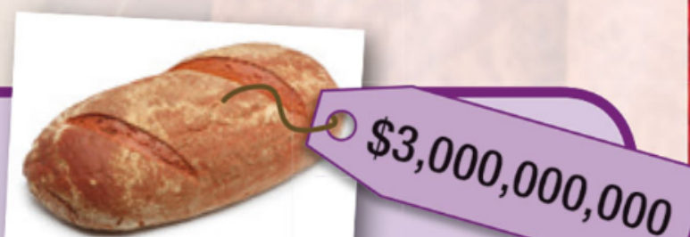

Part 1 of 2: we start Unit 4! What makes people happy — and what doesn't cost any money? Then we learn ten verbs we use to talk about money (Own it! 2, Student's Book pages 46–47).
Start it! Helping peopleVocabulary: Money verbsLearn to learn: Similar words
👩🏫 Teacher's plan · Part 1 TB pp.76–77
Lesson aims
Unit opener (TB p76): I can talk about helping people.
Vocabulary (TB p77): I can talk about money.
Flow
Warm-up: things that make people happy but are free → lead to helping others.
Start it! — photo, discussion, Video 4.1.
Money brainstorm race → Vocabulary Ex 1–3 (audio 4.01, 4.02).
Learn to learn: similar words (Ex 4–5) → Use it! (Ex 6).
Explore it! — a money fact + her own question.
Extras on this page hidden until you open them
Unit quiz · Video 4.1 comprehension questions TB p76
Spelling challenge (4.01) · Write your own situation (4.02) · Extra vocabulary practice · Vocabulary Bank p131 TB p77
Workbook p32: the homework set in the TB TB p77
Flipped class (TB p76)
The TB suggests that students research an interesting fact about money before this lesson, ready for Explore it! (p47). If you didn't set it, she can look one up at the Explore it! step.
Unit 4 at a glance (TB p76)
Skills: I can …
understand an article about money (p48)
understand a monologue about caring jobs (p50)
make and respond to requests (p52)
write an opinion essay (p53)
create a poster for a community project (pp55–56)
Language: I can …
talk about money (p47) · talk about caring jobs (p50)
use could and comparative and superlative adjectives (p49)
use too, too much, too many and (not) enough (p51)
Learn to learn: I can …
understand words with similar meanings (p47)
identify key information before listening (p50)
organise my homework (p57)
Warm-up: free and happy 😊
👩🏫 Teacher notes TB p76 · Warmer
Brainstorm things that make people happy but don't cost any money, e.g. friendship.
Aim: steer her towards the idea of helping others — that's the topic of the video.
The TB does this in groups. Take turns adding one idea each; whoever runs out of ideas first loses.
What makes people happy but doesn't cost any money? Write as many ideas as you can.
friendship, a sunny day, …
Unit 4 quiz 🧠 Extra
👩🏫 Teacher notes TB p76 · Unit quiz
The TB's Unit quiz is a digital resource on Cambridge One, and it isn't in our files. This is a short version made for this lesson from the unit topic. Use it as a lead-in to the video, before or after the warm-up.
2. The unit is called The best things in life are free. Which free thing is it mostly about?
3. True or false? Helping other people can make you healthier and fitter.
4. A man lived without money for three years. What did he discover was more important than money?
Start it!
The best things in life are free
Look · Talk · Watch
👩🏫 Teacher notes TB p76 · Start it! 1–4
1 · The photo
A chance to revise the adjectives of feeling from SB p35 (Unit 3: happy, excited, surprised, upset, tired …).
Ask how the girls probably feel and why.
They look happy.
2 & 3 · Helping people + Video 4.1
Discuss the questions, then write her ways of helping people on the board (or in the box below).
Play Video 4.1. She raises her hand (or says "stop!") when she hears an idea that's on the board.
Q3: It makes you feel healthier and fitter. Ways of helping in the video: building or repairing houses and a community centre · working on an organic farm (growing vegetables, looking after animals) · helping older people (food shopping, keeping them company, reading to them).
4 · Favourite way
Give her one minute of thinking time before she answers.
Optional: open Video comprehension questions (extra, below the video).
📄 Videoscript 4.1 · Helping hands
Helping others is fun! And every year, millions of people do it in their spare time – for free. Why do they do this? Because they want to make a difference!
There are so many ways you can help. You can do it in the evenings, at weekends or when you are on holidays. You can do just about anything, in or near your home town.
So, what type of helper are you? Do you like building things? Then help on one of the many building projects! These projects build and repair houses for families with little money.
Did you know that helping others can teach you new skills? And these skills can help you find a job in the future. Last year these teenagers learned how to build a house. And this group repaired a community centre. Working in a team is a great way to meet new friends.
Do you love being outside and getting your hands dirty? Then help out on an organic farm! Did you know that helping others is good for you? It can make you healthier and keep you fitter. These teenagers are learning all about life on a farm. They're growing vegetables and looking after animals. It doesn't matter if it's hot or cold, foggy or sunny. They're having lots of fun.
Or do you like caring for others? Then help older people! Did you know you can really improve their lives? Every year, many young people help elderly men and women so that they can continue to live in their own home. They go food shopping for the person, keep them company and read to them. And usually they learn a lot, too. There's no time to feel bored and lonely.
Remember: what you give is what you get! When was the last time you made a difference?
1. Look at the photo. How are the girls feeling? Why?
They look …
2. Before you watch: how do you help other people? Write your ideas.
I help my mum with the shopping. I …
3. How do you feel when you help? Watch the video and check. Did you hear any of your ideas?
Helping makes you feel …
4. Which of the ways of helping in the video do you like best? Why?
🔨
Building and repairing houses
🥕
Working on an organic farm
👵
Helping older people
I like … best because … · I'd like to try … · I don't think I'd like … because …
Video 4.1: Helping hands — questions 🎬 Extra
👩🏫 Teacher notes TB p76 · Video comprehension questions
The TB's video questions are on Cambridge One and aren't in our files. These questions were written for this lesson from the official videoscript (Unit 4, Video 4.1).
1 They build and repair houses for families with little money. · 2 new skills (they can help you find a job) · 3 They grow vegetables and look after animals. · 4 They go food shopping, keep them company and read to them. · 5 … what you get.
Watch Video 4.1 again (in Start it! above) and answer the questions.
1. What do the building projects do?
2. What can helping others teach you?
3. What are the teenagers doing on the farm?
4. How do young people help older people?
5. Finish it: "What you give is …"
Vocabulary
Money verbs 💷
Match · Listen · Repeat
👩🏫 Teacher notes TB p77 · Warmer + Ex 1
Warmer: money brainstorm
Brainstorm words connected with money, e.g. expensive, banknotes, price. The TB does this as a team game: most words wins.
Race her: one minute each, she types into the box below and you write yours. Most words wins.
Ex 1 · Match sentences and photos
1 g · 2 e · 3 c · 4 b · 5 f · 6 d · 7 a
★★★Challenge (stronger students): one person reads a sentence and says "beep" instead of the bold verb. The other repeats the sentence with the correct verb. Take turns.
★After feedback: students write a new short conversation and act it out. The listeners guess the verb. See the extra Write your own situation below.
📄 Audioscript 4.02 (TB p164)
1 OK, so that's £14.40 in total. Just let me get the card machine. OK, that's ready for you now … put your card here …
2 A: Dad, I haven't got enough money to go to the cinema with Jack later. Have you got £5?
B: Yes, I have. You can have it, but I want it back at the weekend.
A: Of course!
3 A: Wow! Look at those trainers. They're really cool and they aren't very expensive. Why don't you get them?
B: No, I can't. I want to have enough money for my trip to Greece in the summer.
4 A: Hi, can I help you?
B: Yes, I've got some American dollars, but I need Polish zloty.
A: Sure, let's just see how much you can get today …
5 Come on! Delicious fresh fruit, it's a bargain! We've got apples, bananas, pears, pineapples … go on, you know you want to …
3. Listen and write the correct verb from Exercise 1 for each situation. Sometimes there is more than one possible answer.
1 (example)
2
3
4
5
Write your own situation 🎭 Extra
👩🏫 Teacher notes TB p77 · Ex 3 ★
She writes a short conversation for one money verb, without saying the verb. You act it out together and you guess the verb. Then swap: you invent one and she guesses.
Write a short conversation like the ones in Track 4.02. Don't use the verb! Act it out — can your teacher guess the verb?
A: That's a beautiful bike! How much is it? B: It's £80. Do you want it? I don't ride it any more. (→ sell)
My verb is:
Extra vocabulary practice 💪 Extra
👩🏫 Teacher notes TB p77 · Extra vocabulary practice
The TB's Extra vocabulary practice is on Cambridge One and isn't in our files. This is a short version written for this lesson. It practises the pairs that students most often confuse.
1. Can I ___ your pen? I'll give it back after the lesson.
2. How much does this T-shirt ___?
3. I ___ £5 a week when I walk my neighbour's dog.
4. I'm ___ my money for a new phone.
5. You ___ me £3 from yesterday!
6. Can I ___ by card, please?
7. My brother never wants to ___ me his headphones.
8. Don't ___ all your money on sweets!
Vocabulary Bank: money verbs 📒 Extra
👩🏫 Teacher notes TB p77 → SB p131 Ex 1
Only Ex 1 belongs to this lesson. The rest of p131 (caring jobs, stress patterns) goes with SB p50. After completing the questions, ask and answer them together.
1 paid · 2 spend · 3 earn · 4 borrow · 5 cost (more than one answer is sometimes possible, e.g. 2 save)
1. Complete the questions with the money verbs. Then ask and answer with your teacher.
borrowchangecostearnlendowepaysavesellspend
1. Who for your phone?
2. Do you usually all your pocket money?
3. Do you do any jobs to money?
4. Do you ever money from your friends?
5. How much does a good laptop ?
My answers:
Learn to learn
Similar words 🔍
How can you remember the difference?
👩🏫 Teacher notes TB p77 · Learn to learn + Ex 4–5
Encourage her to record easily confused words in her vocabulary notebook, with full example sentences and an explanation of the difference.
Point out that translation may not always help here. In many languages one word covers both borrow and lend.
You buy something, but you spend money (on something). You earn money by working, but you win money through luck (a competition, a lottery). Also ask for any other ideas she has.
Ex 5 is "compare with a partner": you be the partner. Share your own memory trick, e.g. a picture, a gesture, or a sentence about yourself.
Many words have similar meanings. Think of ways to help you understand the differences. You lend money to someone (it's yours).
You borrow money from someone (it isn't yours).
4. Look at these pairs of verbs. Think of more ways to remember the different meanings.
spend / buy:
earn / win:
5. Compare with your teacher. How does your teacher remember the meanings? Which idea do you like best?
Best idea:
Use it!
Talk about you 🗣️
Your own sentences · a money fact
👩🏫 Teacher notes TB p77 · Ex 6
She completes the sentences, then tells you. Ask follow-up questions.
After feedback, point out that personalised example sentences are one of the best ways to remember new vocabulary.
6. Complete the sentences with your own ideas. Tell your teacher.
1. A good way to earn money is to
2. The last time I borrowed money was
3. I spend most of my money on
Explore it! 🔎
👩🏫 Teacher notes TB p77 · Explore it!
True. Zimbabwe printed a $100 trillion banknote during hyperinflation (2008–2009).
She finds another interesting money fact, either the one from the flipped-class task or one she looks up now, and writes a question for you.
The TB does this in pairs and then shares with the class. Here, she reads her question out loud and you answer it.

Is the sentence T (true) or F (false)?
In Zimbabwe, there was a $100 trillion banknote. At that time, bread cost $300 billion.
🔎 Use the internet to find another interesting fact about money. Then write a question about it for your teacher.
My fact:
My question:
Workbook p32: Money verbs 📘 Extra
👩🏫 Teacher notes TB p77 · Homework: Workbook p32
The TB sets this as homework. Open it for her after the lesson, or work through part of it together if there's time. The answer key isn't in our files, so these answers were checked against the page.
Ex 1: 1 cost · 2 change · 3 earn · 4 borrow · 5 spend · 6 sell · 7 pay · 8 lend · 9 save · 10 owe
Ex 2: 1 Save · 2 lend · 3 cost · 4 earns · 5 owing · 6 sold
Ex 3: 1 earn · 2 cost · 3 pay · 4 sell · 5 change · 6 spend
Ex 4: 1 pay · 2 borrow · 3 owe · 4 lend · 5 save · 6 sell · 7 cost
Ex 5: 1 lend / borrows · 2 sells / buy · 3 save / spend · 4 earn / win
Explore it!: True. The makers of Monopoly print more play money each year than the US prints real dollars (a popular claim).
1. Put the letters in the correct order to make money verbs.
1 s o t c → (example)
2 n e h g c a → 3 r n a e → 4 r o o r w b →
5 e p n d s → 6 l e s l → 7 y a p →
8 d l n e → 9 v a e s → 10 e o w →
2. Choose the correct options.
1. ___ your money for something you really want. (example)
2. Please can you ___ me £5?
3. How much did that phone ___ you?
4. Harry ___ £2.50 when he washes his mum's car.
5. I don't like ___ my friends money.
6. She ___ her old bike to a school friend.
3. Complete the sentences with the words in the box.
changecostearnpaysellspend
1. You money for work you do. (example)
2. How much did those cool trainers ?
3. Can we for our drinks with euros on the plane?
4. Supermarkets many different things to their customers.
5. Where can I my Brazilian reals into pounds?
6. Don't all your birthday money on video games and sweets!
4. Complete the text messages with money verbs from Exercise 1.
📱 I can't 1 for my phone this month. Can I 2 £10 from you, please?
📱 But you 3 me £5 from last month! ☹️ I can't 4 you any more. Sorry.
📱 What can I do? It's impossible to 5 money – I never have any left at the end of the week.
📱 You can 6 me your skateboard for £15. 😉
📱 My skateboard 7 £50 when I bought it!
📱 Oh, well. Sorry, I can't help you then.
5. Complete the definitions with the correct form of the similar words in each pair.
1. You some money to a friend. Your friend money from you. (borrow / lend)
2. A shop assistant something to you. You something from a shop assistant. (buy / sell)
3. People money for things they need. They money in a shop or online. (save / spend)
4. You money when you work. You money in a competition or a lottery. (earn / win)
Explore it! True or false? In the USA, they print more Monopoly money than real dollars every year.
🔎 Use the internet to find an interesting fact about banknotes or coins. Then write a true or false question about it for your teacher.
Example — fact: The UK £5 note is made of plastic. Question: True or false? The British £5 note is made of paper.
My fact:
My question:
Homework
🏠 Homework
No homework here yet. Your teacher will add tasks after the lesson.
Do these tasks at home. Your answers are saved automatically — press Check ✓ to see how you did.
Photo credits
Photos: Own it! 2 Student's Book (Cambridge University Press), pages 46–47.
Video 4.1, audio 4.01–4.02: Own it! 2 (Cambridge University Press).